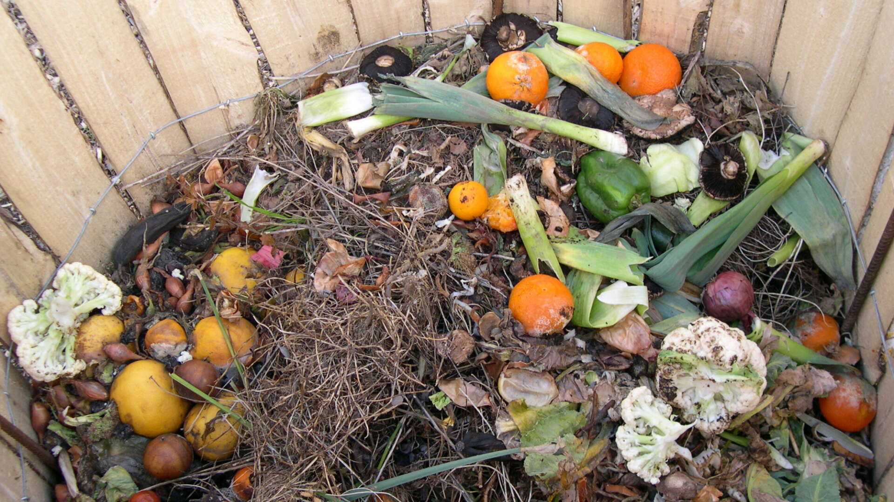

3-R's Principle
Introduction
The principle of reducing waste, reusing and recycling resources and products is often called the "3Rs."
Reducing means choosing to use things with care to reduce the amount of waste generated.
Reusing involves the repeated use of items or parts of items which still have usable aspects.
Recycling means the use of waste itself as resources.
Waste minimization can be achieved in an efficient way by focusing primarily on the first of the 3Rs, "reduce," followed by "reuse" and then "recycle." 
Steps with examples
Reduce : The first step is to reduce the amount of waste produced in the first place. This involves minimizing the consumption of resources and products. Examples include:
Reuse : This step focuses on finding new uses for items rather than throwing them away after a single use. This can extend the life of products and reduce the need for new resources. Examples include:
Recycle : This step includes processing waste into new materials. It reduces the need of raw materials.